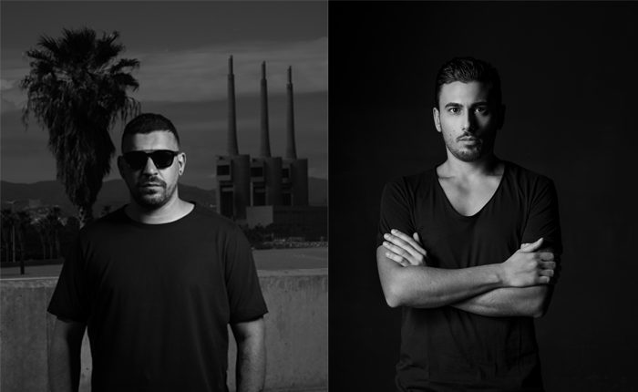

Luigi Madonna & Roberto Capuano Deliver a Drumcode A-Side With “Limitless”


This year, Drumcode certified its status as the one of the most powerful labels that techno has ever seen, with Swedish powerhouse Adam Beyer continuing to lead the charge, while mentoring the next generation of scene leaders. Such is the volume of excellent music Drumcode receives that not all of it gets released on EPs. As such, the label’s annual A-Sides compilation is used to showcase the otherwise Drumcode bangers that feature in Beyer’s sets.
Drumcode A-Sides Vol.6 has just arrived, and one of the compilation’s many stompers is “Limitless.” It sees Italy’s Luigi Madonna and Roberto Capuano teaming up for a collaboration that’s pumped and primed for those massive, sweaty techno parties.
Fitted with those unmistakable Drumcode warehouse rhythms, “Limitless” is also the most euphoric track you’ll find on the compilation. Its looped vocal sample drives some particularly exhilarating energies that are channeled into a massive breakdown several minutes in.
Available now via Drumcode.
Buy Drumcode’s A-Sides Volume 6 compilation here.
Follow Roberto Capuano on Facebook | Twitter | SoundCloud
Follow Luigi Madonna on Facebook | Twitter | SoundCloud
Follow Drumcode on Facebook | Twitter | SoundCloud